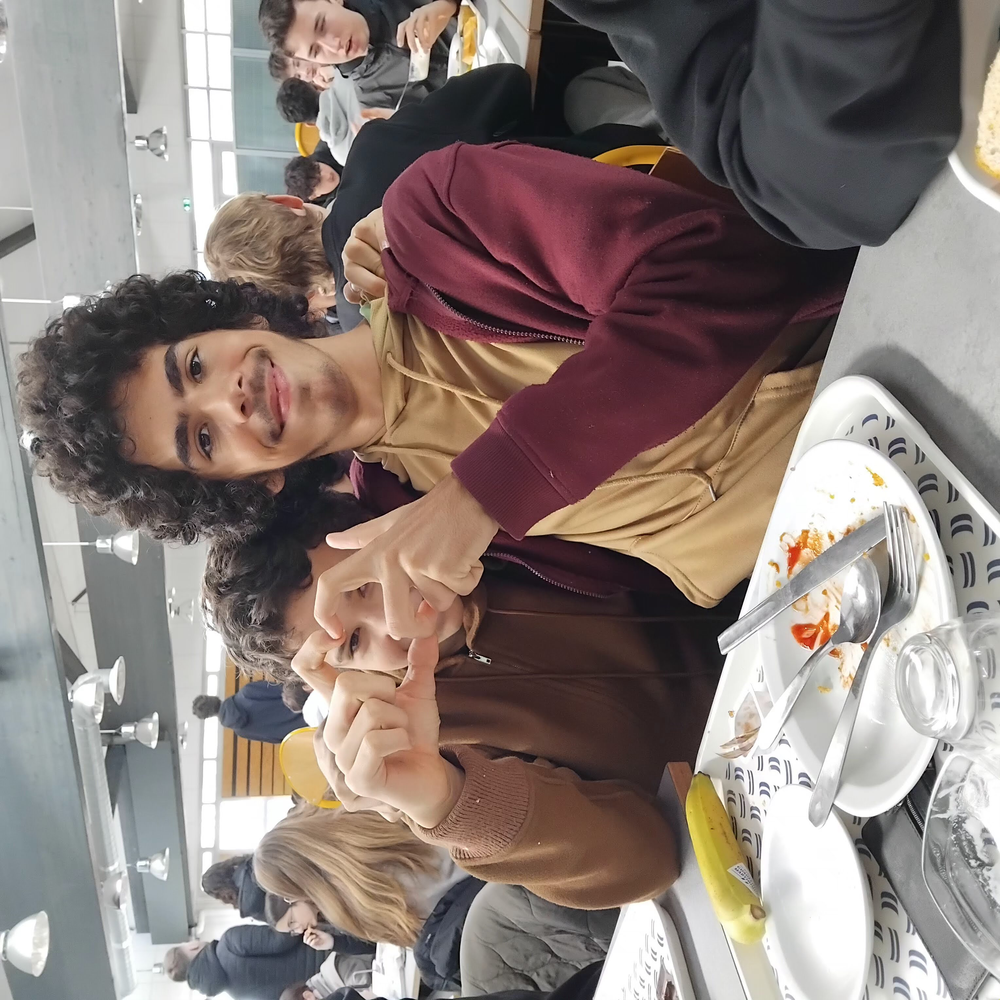

Nous sommes tous très émus à l'annonce du mariage de Omaël et de Gabriel. C'est un jour historique pour notre communauté, et nous leur souhaitons tout le bonheur du monde.

Nous avons hâte de voir les photos de la cérémonie, et surtout de découvrir les tenues de nos deux divins tourtereaux. On espère que le thème sera "apocalypse", mais connaissant le style impeccable d'Omaël, on ne doute pas que ce sera un sans faute.
Longue vie aux mariés ! On leur souhaite du bonheur et des enfants aussi beaux que leur papa et leur maman.
PS : On attend toujours les photos de la lune de miel, les gars. N'oubliez pas que le public veut du contenu exclusif.